来源：https://p03a4vs9s2.feishu.cn/docx/IX1Lds1f7ot70Hx1h2Ec1Tk8n1f
这两年小红书的风很大，特别是今年上了春晚后，越来越多的商家参与小红书获客。但小红书月活用户才3亿左右，流量不够分。而且随着越来越多的商家介入，未来小红书的流量一定会越来越贵
为了帮助品牌抢到流量，我们团队把「BKFS组合营销」升级了，变得更全面，更适合投放预算不高的商家，内容矩阵方法还很适合比较敏感的行业
这一套营销模式操作也很简单，我们团队的一个运营就能负责完整流程，一个月单账号获客1100+，营收70w，境外游能做到月gmv 700w+
之前在复盘境外游投放的时候已经讲过「BKFS组合营销」，感兴趣的可以回看：
今天拿婚纱摄影行业具体讲下组合营销玩法
这个组合营销的方式，适合大部分需要从小红书获客的商家，特别是客单价高、决策成本高的商家
先讲下我们是如何选择营销方式的：
在确定营销方式前，先做了一遍市场调查，主要2个方向：「同行怎么做」和「用户怎么买」
我们收集了一系列的竞品来分析，发现同行基本都是这几种玩法：
整个行业的同行情况都摸了一遍，大部分都是采取其中1～2种方法，获客情况也做的不错
根据产品特性，我们也调研了一下用户的消费路径，在下单前，大部分用户都有这几个动作：
用户在下单、完成服务后，还可能会有以下动作：
我们可以把用户下单前的1、2、3归为：被看到
把4、5、6归为：被信任
行业竞品在做的，大部分在做「被看到」，少部分在做「被信任」，有部分想通过素人铺量玩法扩大「被看到」和「被信任」，结果被封品牌词
所以，我们在定营销策略时，既要做「被看到」，也要做好「被信任」，同时还不能被封品牌词
因为在境外游有试过BKFS组合营销，所以我们把这个方法迁移到婚摄行业，意外发现，非常契合
为防止有人没看过境外游的帖子，我再解释一下什么是BKFS
B：品牌/官号矩阵
K：kos主理人 & kol
F：信息流投放
S：搜索投放
组合营销就是：通过品牌账号输出产品营销内容，配合聚光搜索、信息流广告获客，再搭建kos矩阵，增强用户信任
婚摄行业我们是这样规划的：
主做产品宣传，品牌宣传，发布自己的婚纱照风格，让更多人看到产品
在通过搭建、调整聚光广告，以最低成本来获取最精准的客户
搭建主理人、客户好评和伪素人的矩阵，增加用户的信任度。因公司没有合适的人员做个人IP，所以主理人矩阵我们做了一些调整
这三个矩阵最容易与用户建立信任，引流到品牌咨询
为降低风险和扩大曝光，我们安排了一些KOL来探店，主要有2种模式：
前面是运营思路，下面会具体讲下具体操作：
提醒：为保护客户隐私，以下图片案例全部用网上找的相似案例，非本人实操账号，注意辨别
首先明确企业号的职能定位：
企业号的经营思路，就是增加「被看到」的概率
账号基础设置按正常设置就行，参考：
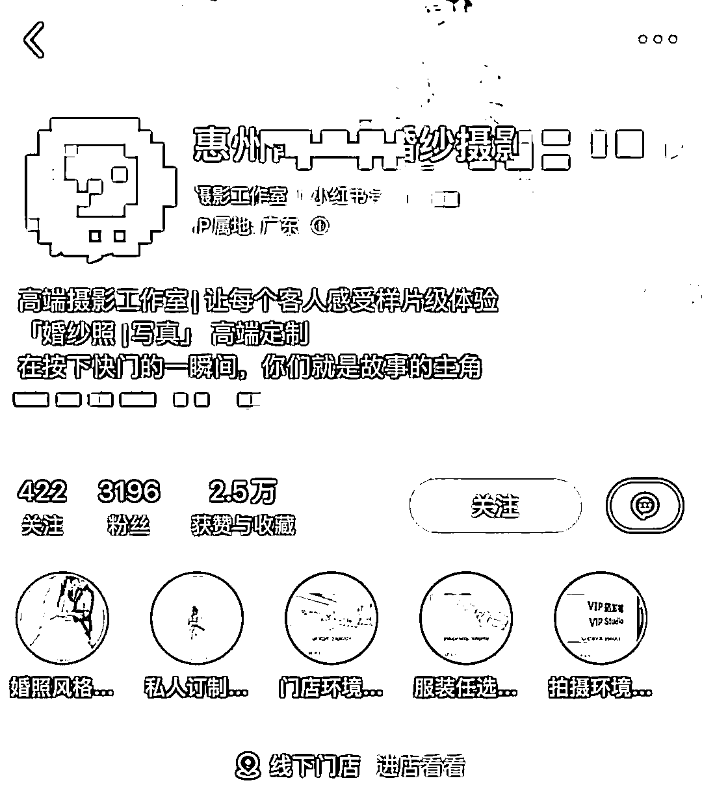
这些在很多帖子、文章里都有讲过，而且有点运营基础应该都没问题
装修另一个重点是「置顶笔记」，分享几个比较高转化的置顶笔记选题：
置顶笔记同时也是投放笔记，需要花心思写，特别对于高客单赛道，公司实力宣传非常重要
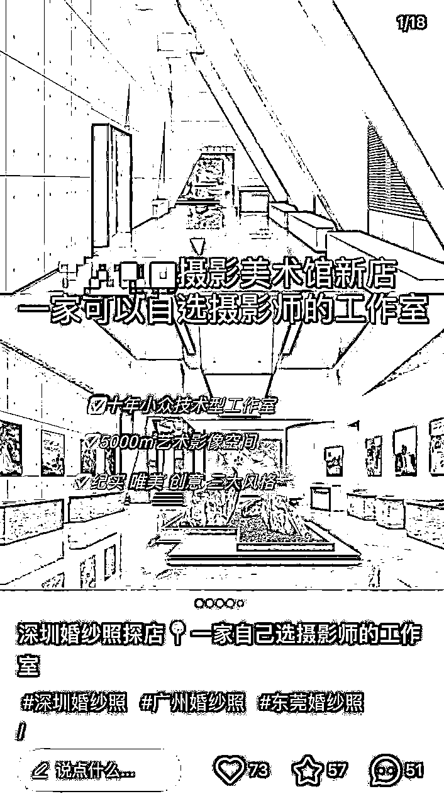
企业号的内容定位主要是品牌宣传和产品推广，内容大部分都会用于聚光投放，所以笔记选题可以都往硬广上写
分享几个高转化的选题类型：
直接宣传公司产品，包括拍摄风格、婚纱照风格、套餐包含内容等
选题参考：
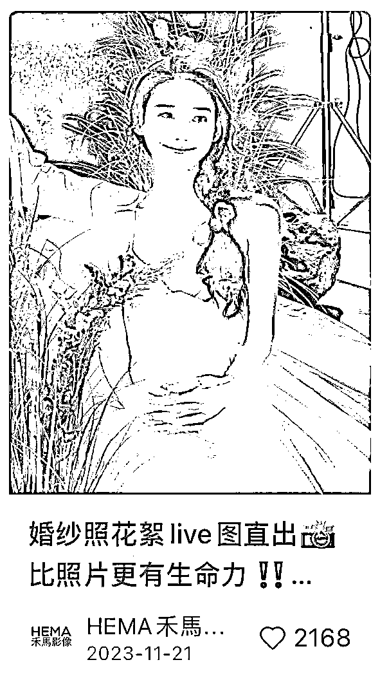
包括置顶笔记的选题类型，主要突出品牌门店、环境、公司实力、品牌调性，以及引导到店、咨询等内容
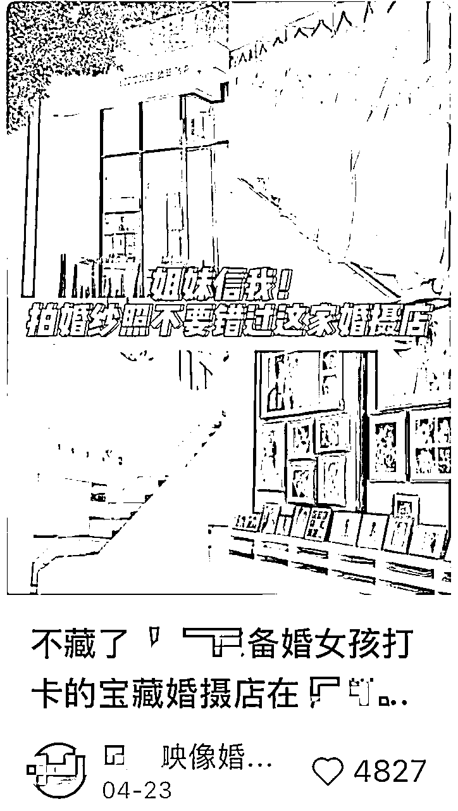
也可以把产品/服务，或者相关的报价、价格表、服务表，做成个大合集，这样的内容，可用于长期投放
选题参考：
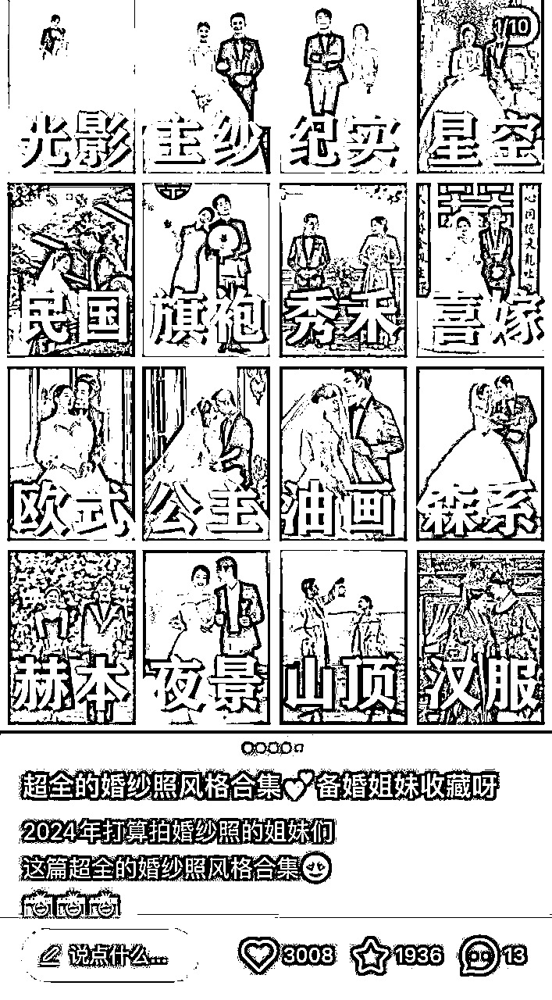
为了增加搜索权重，一般会在标题上增加一些关键词。常用的关键词包括：
对于有地区限制的行业来说，地区词是最容易被搜索和识别的，所以一定要加上
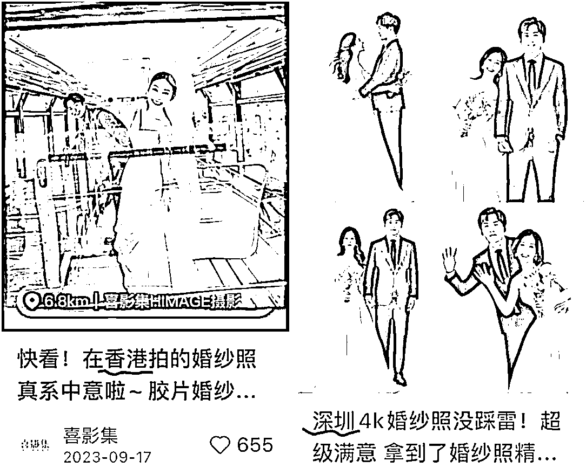
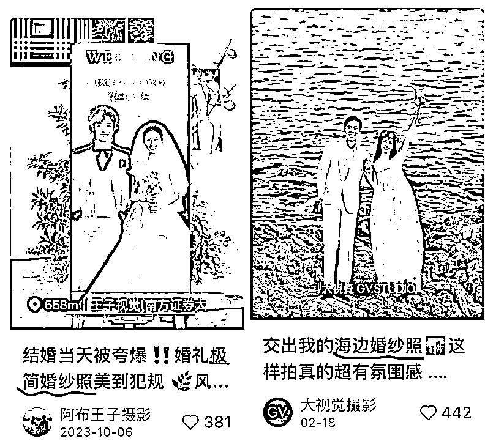
这些都是热门的产品风格词，也是用户经常搜索的关键词，尽量都加上
如果笔记用于投流，在聚光广告上可以设置标题优化，可以在一定程度上减轻内容制作难度
婚纱摄影类的笔记封面，只要找出产品最大的亮点突出，点击率就会很高
比如，
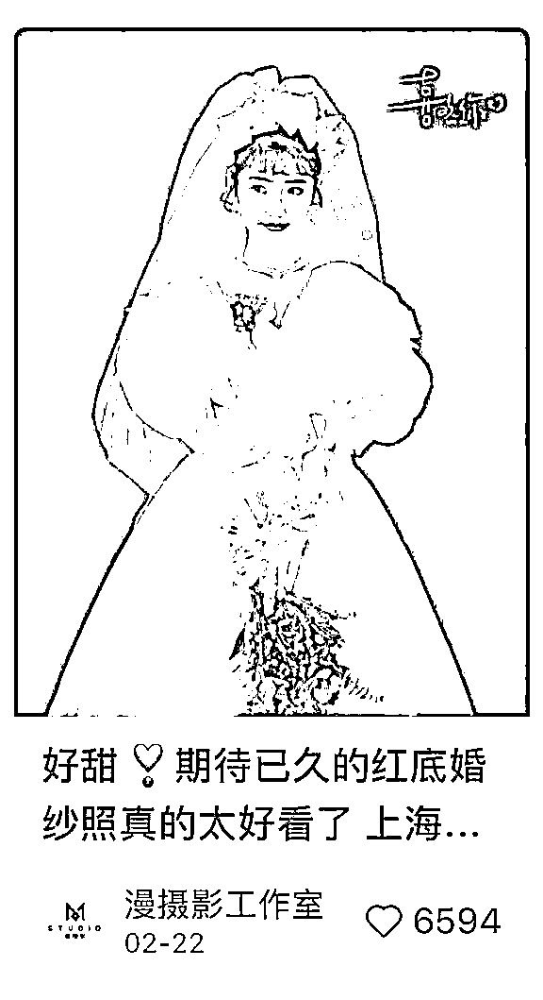
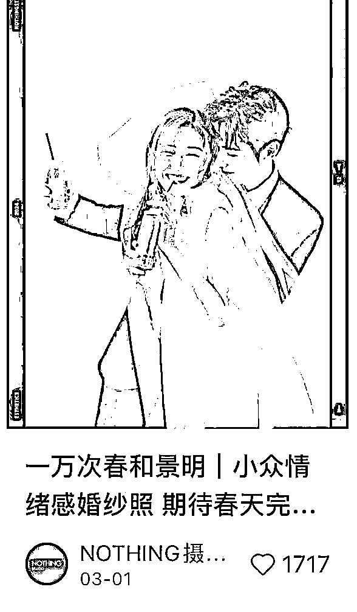
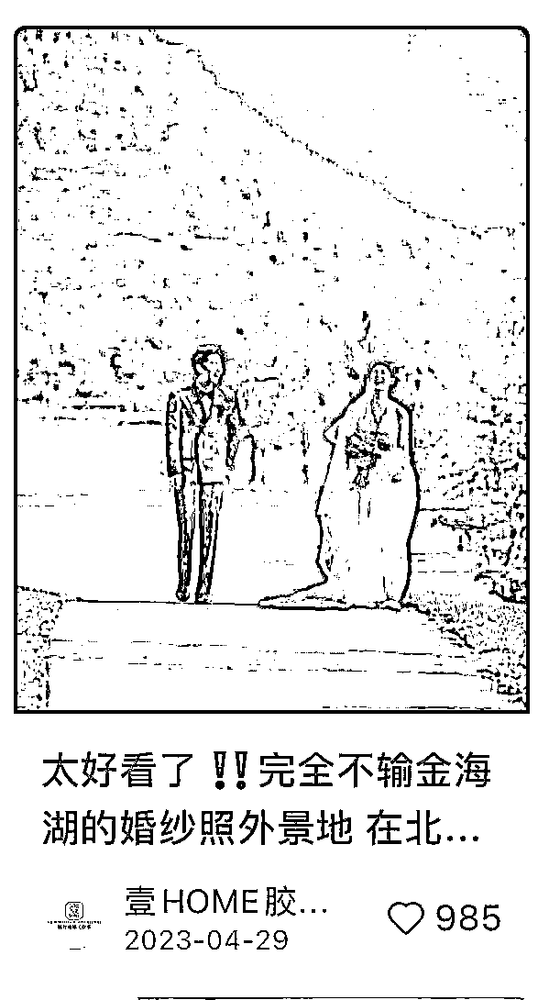
聚光投放也有封面优化，但如果封面是经过精心设计，后面内容图片没那么好看的情况下，不需要开启封面优化
封面优化适用于，封面和内容图没有特别大差异的情况下使用
每个行业、不同选题，写文案的方式都有差异
分享几个大部分行业都通用的方法：
广告投放部分，主要聚光 + 达人种草，没有投放薯条。在广告预算分配，主要是这些：
以上预算分配，都不是固定的，会随时调整。我讲下为什么这么分配：
在搭建全站智投前，先筛选一遍适合投放的笔记：
把符合要求的笔记ID全部收集起来（笔记ID每一篇笔记后面那一串）
如果是新账号，跳过笔记筛选，直接进入建立计划
建立一个全站计划：
将全站跑出的优质笔记重新建立信息流计划，前半部分操作都差不多，信息流主要在人群圈选
如果产品适合小红书所有用户，可以选通投。如果没有经验，可以选择「智能定向」。如果想人群更精准，可以选择「高级定向」
我们一般选择高级定向，人群圈选这几个：
最后再把「智能扩量」打开
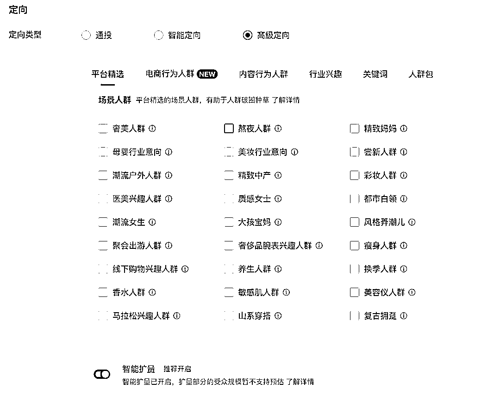
信息流人群圈选，可以根据自己行业去调整，一般都是全选核心人群 + 相关人群，如果跑不出去，再加边缘人群
按正常理解，搜索流量比信息流会更加精准，但我们的投放的婚摄行业，搜索广告成本反而增加，用户比价也比较厉害，所以并没有做投放重点
但依然分享下投放思路：
投放搜索时，关键词可以选择1000个，不能太少，也不能太多，关键词太少会导致投不出去，关键词太多会导致人群跑偏，成本变高
一般情况下只选择：主关键词 + 相关词
主关键词包括：
跟产品、服务和品牌直接相关的词，这些词的搜索概率非常大，但是竞争也很大，可以增加一些相关词
相关词包括：
在旺季时，如果预算充足，且想要扩大品牌声量，可以追加投放「抢占赛道」
抢占赛道可以把笔记推送至关键词搜索广告的第 1 位或者前 3 位，费用非常高，所以如果投放这个，关键词一定要精准，而且不能太多
婚摄行业一般就邀约本地的达人来探店，这部分不是投放重点，简单分享下投放思路：
前面都是常规运营操作，到矩阵化操作才是弯道超车的重点，矩阵类型有以下几种：
简单说，就是打造 IP ，突出行业专业身份和业务范围，并关联主理人（一个企业号可以关联3个主理人）
如果有「员工账号」功能的话，可以关联若干个员工账号
员工人设：以员工的角度，切入你的产品，如：在XXX公司上班是什么样的体验
品牌虚拟IP：以品牌的形象出镜，虚构一个品牌IP，如旺仔、雪王
创始人设：把自己当作品牌创始人，分享自己品牌创建经历、品牌故事和品牌愿景、产品等内容获得曝光，让用户既支持自己又支持产品
小编人设：最常见的人设，以小编的方式写营销文案，如盼盼、扫描全能王
其他：岗位性质人设，如旅行体验师、摄影师、化妆师、设计师、客服等等
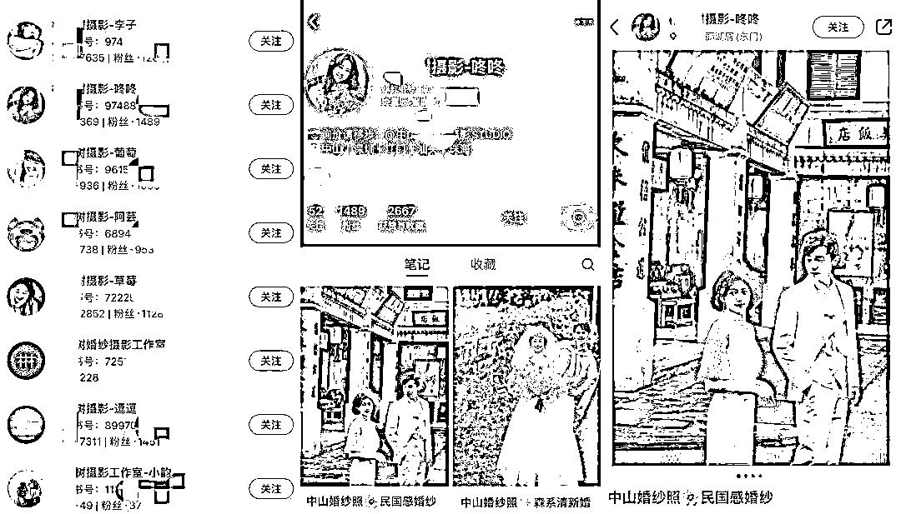
头像：突出主理人专业身份或者产品、服务即可，真人头像更具说服力
昵称：主要突出主理人的称谓、身份和作用，如：（品牌名+昵称职责：xx婚纱摄影主理人）
简介：@官号联动，并描述账号价值，账号更新的内容方向等
内容：根据个人工作事项，突出品牌优势。可以更新专业知识、产品测评、品牌故事和实力证明……
定位：笔记定位到门店地址
标题：同样添加搜索词（xx地标 +婚纱照）
前面我们调研了用户的消费路径，发现很多用户都会在小红书发帖，或者评论，向博主求推荐品牌
这些看起来是用户「真实测评」和「推荐」的帖子，最容易吸引其他用户的阅读，而且信任度很高
一个用户在找婚纱摄影店之前，即使不发帖求推荐，也会经常刷到其他人的推荐，会看下评论区，其他人对婚纱店的评价是怎么样的
同时，如果一个求推荐帖子火了，往往会去主页看下她最终选择了哪一家，也会看下有没有真实测评，有没有踩雷
所以为了利用好这一点，我们做了一系列的素人号矩阵，主要更新内容：
发布完最后的笔记后，这一个素人号基本就结束了，后面继续更新日常和婚纱照的问答等，不用花太多心思
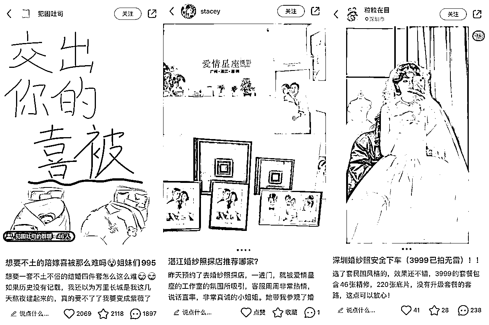
服务好任何渠道来的客户，引导客户分享小红书笔记，真实客户分享，比伪素人号更有用
分享主题：
数据好（点赞/收藏达到标准，有真实用户咨询），可给一些费用帮助薯条投放，增加曝光
另外，用户是不会免费分享的，给他一些费用就行了，具体费用根据行业确定
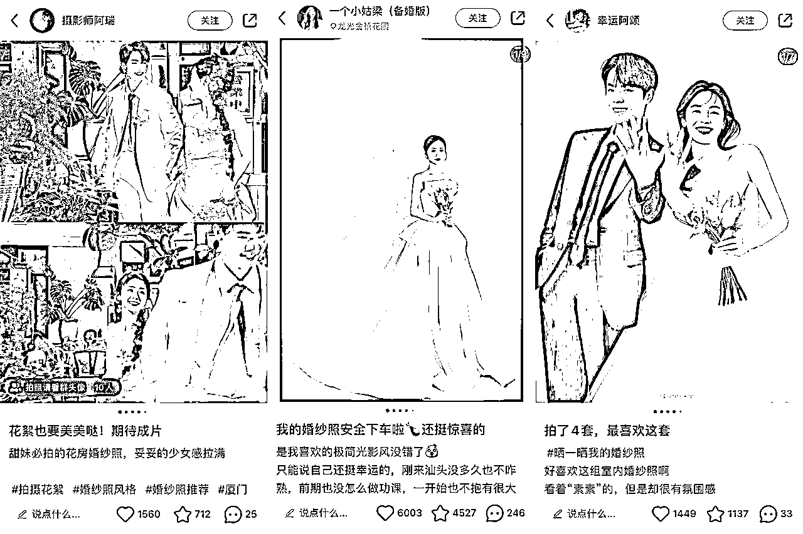
大部分用户也没有内容创作能力，所以如果采用客户好评种草的话，有2个建议
以上，就是整体营销的思路，适合大部分决策成本较高的行业
几乎是无保留分享啦！跨行业也可以拿来即用！
-END-